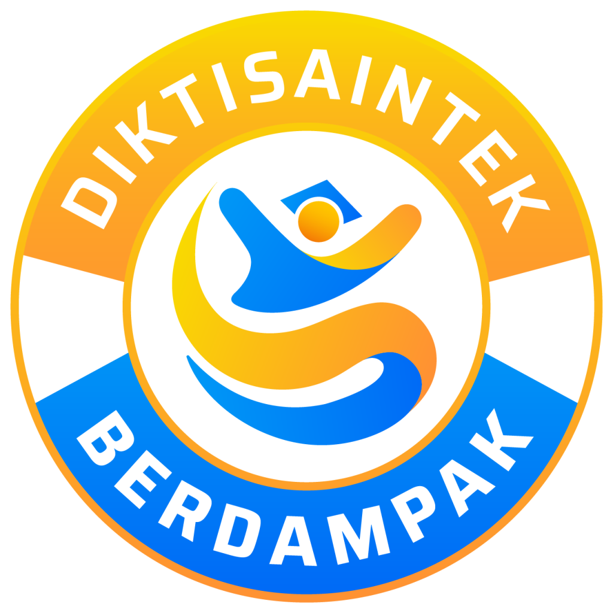

-



Eduners, kalian tahu nggak sih selain planet, Tata Surya kita juga punya berbagai benda langit lainnya. Sekarang waktunya Eduniverse mengajak kalian menjelajahi benda-benda langit tersebut. Yuk, kita kenalan dengan Asteroid dan komet lewat video berikut.
Bagaimana teman-teman? Ternyata ada benda langit berupa Asteroid dan Komet disistem Tata Surya kita. Untuk memahami lebih lanjut mengenai Asteroid dan Komet, klik tombol selanjutnya ya!